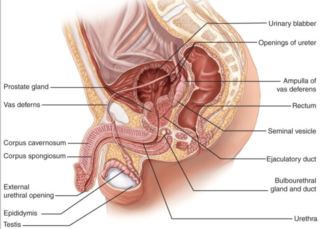

Internal Structures

Epididymis
• This is a tightly coiled tube that is responsible for conducting the sperm from the tubule to the vas deferens.
• It has a length of approximately 20 feet long.
• Some sperm are stored in the epididymis, along with the semen.
• The sperm takes an estimated 12 to 20 days of travel along the epididymis, and a total of 64 days to reach maturity.
Vas Deferens
• The function of the vas deferens is to carry the sperm through the inguinal canal from the epididymis into the abdominal cavity where it will end at the seminal vesicles and the ejaculatory duct.
• It is a hollow tube that is protected by a thick fibrous coating and surrounded by arteries and veins.
Seminal Vesicles
• These are two convoluted pouches along the lower portion of the posterior surface of the bladder.
• The seminal vesicles secrete a liquid that is viscous and alkaline and has high protein, sugar, and prostaglandin content, which makes the sperm increasingly motile.
Ejaculatory Ducts
• These ducts pass through the prostate gland to join the seminal vesicles and the urethra.
Prostate Gland
• This is a chestnut-sized gland that is situated below the bladder.
• It secretes a thin, alkaline fluid that adds protection to the sperm from being immobilized by the low pH level of the urethra.
• The urethra passes through its center like a doughnut.
Bulbourethral Glands
• Also called as Cowper’s gland, these glands also secrete alkaline fluid to counteract the acidic environment in the urethra.
• These are twp glands located at either side of the prostate gland and seminal vesicles and empty through the short ducts towards the urethra.
• Semen is a product of 60% from the prostate gland, 30% from the seminal vesicles, 5% from the epididymis, and 5% from the bulbourethral glands.
Urethra
• This structure passes through the prostate gland towards the shaft and glans penis.
• It is a hollow tube from the base of the bladder and lined with mucous membrane.
• It has a length of approximately 8 inches or 18 to 20 cm.
External Structures
Scrotum
• The scrotum is responsible for the support of the testes and it regulates the temperature of the sperm.
• It is a rugated, muscular, skin-covered pouch over the perineum.
• To promote the production and viability of the sperm, the scrotum contracts towards the body during a very cold weather and relaxes away from the body during a hot weather.
Testes
• In each scrotum lies two oval-shaped glands called the testes.
• These are 2 to 3 cm in width and are encapsulated in a protective, white fibrous capsule.
• Several lobules are contained in each testis, which also contains Leydig’s cells that produce testosterone and seminiferous tubules that produce spermatozoa.
• In most men, one testis is slightly lower than the other to prevent trauma and easily sit or do any muscular activity.
Penis
• The penis has three parts: two are called the corpus cavernosa, and the other is the corpus spongiosum.
• These erectile tissues also contain the urethra, making the penis an outlet for both urinary and reproductive
functions.
• Erection of the penis is stimulated by the parasympathetic nerve innervations, and the blood supply for the penis is from the penile artery.
• The glans, a sensitive, bulging ridge of tissue, is located at the distal part of the penis.
• The prepuce, which is a retractable casing of skin, protects the glans at birth. It is also the part that is surgically removed during circumcision